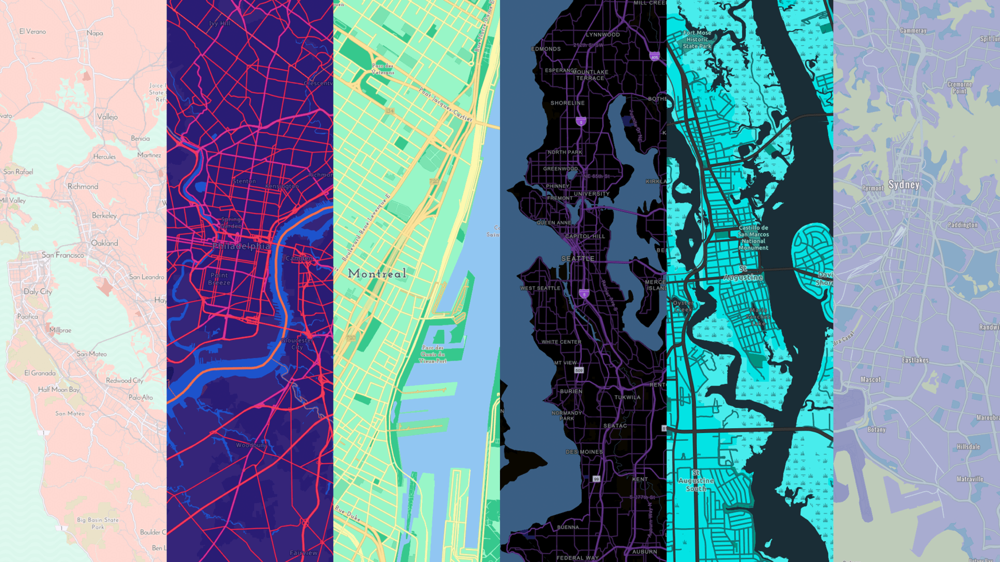
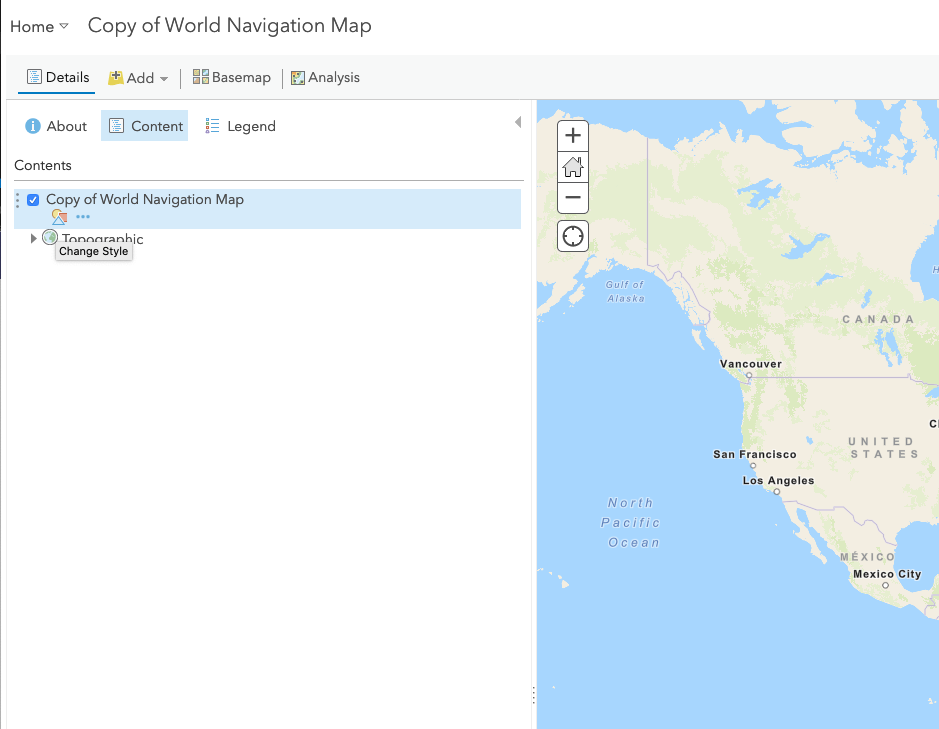

# Patrick Arlt (1)
Custom Basemaps with
Vector Tile Style Editor
Patrick Arlt and Allison Davis
slides:
bit.ly/2TYI0bmX
<!-- Pat --> ## Vector Tile Refresher * Compressed vector geographic data * Binary indexed tile scheme * Transfer and render *LOTS* of features * Styled on the client * Seperation of data (tiles) and style
<!-- Pat --> ## Styling Spec * [Mapbox Style Specification](https://docs.mapbox.com/mapbox-gl-js/style-spec/) * Styles have ~150-300 layers * Each layer has a "source" layer * Layers can have an optional "filter" for data * Background, fill, symbol, line layers * Hard to write by hand
<!-- Pat --> ## Vector Tile Style Editor * A visual editor for styling vector tile data * Extra tools for editing Esri basemaps * Goal: a complete editing experience <aside class="notes"> Web application built by the Developer Experience team in Angular. </aside>
<!-- Pat --> ## What's new? * Now available in ArcGIS Online and ArcGIS Enterprise * Open Street Map now available * New Esri styles: Community, Charted Territory, National Geographic * Sprite deletion <aside class="notes"> Here's what's new from last year's talk @TODO double check any new Esri styles and updates </aside>
<!-- Pat --> ## Showcase <a href="https://esripdx.maps.arcgis.com/apps/Cascade/index.html?appid=9a79059a75e249039d24740758e4624b"></a> [Showcase App](https://esripdx.maps.arcgis.com/apps/Cascade/index.html?appid=9a79059a75e249039d24740758e4624b)
# Allison Davis (2)
<!-- Allison --> ## Editor Overview [Let's get started](https://developers.arcgis.com/vector-tile-style-editor) <aside class="notes" data-markdown> * Demo basemap gallery * Open World Topo * Show minimaps * Toggle hillshade * Click map to layer * Save map </aside>
<!-- Allison --> ## Editing in ArcGIS Online  #### VTSE can be toggled from inside the Map Viewer <aside class="notes" data-markdown> * Start on AGOL item, demo opening in Map Viewer and then VTSE </aside>
<!-- Allison --> ## Quick Editor * Fast, bulk styling for Esri and OSM basemaps * 6 color groups * ~500-1000 styling rules * Label and road size editing <aside class="notes" data-markdown> * Allows you to edit large categories in Bulk * groups: (land, water, roads, boundaries, buildings) * Depending on the complexity of the style and the number of layers there can be anywhere from 500 to over 100 rules * Continue demo in AGOL (world nav) * Demo Color theming * Demo randomize * Show color palette tools * Show sprite recoloring * Font replace * Label size * Road size </aside>
<!-- Allison --> ## Inside Quick Editor 1. 6 color groups 2. Style rules run 3. Labels colored to meet contrast threshold 4. Shadows and road casings colored for contrast 5. Icons and patterns are tinted to match color groups <aside class="notes" data-markdown> * The internals of Quick Editor * We take the 6 basic color groups * Run through the giant list of styling rules - typically a rule applies to one layer, parks for example * Individual layer colors within the group are adjusted so that layer colors don't collide too much with others in the style * Label colors are adjusted to meet specified contrast threshold - contrast between the text color and outline color of the label * Shadows and road casings colored for contrast * Last, if selected, icons and patterns are tinted to match the color groups </aside>
<!-- Allison --> ## Group Editor * Bulk edit 1 category of layers * Same rules as quick editor * Great for big categories like major or minor roads * Edit a large number of layers fast <aside class="notes" data-markdown> (Slide first, then demo) * Zoom to Portland OR (Zoom level 12) * Style minor road group (color, label color, label size) </aside>
<!-- Allison --> ## Layer Editor * Edit any propery of any layer * Verbose, but detailed editing * Use stops for different style across zoom levels * Show/hide layers * Customize zoom levels * High level of control <aside class="notes" data-markdown> (Slides first, then demo) * Click on forest park * Adjust visible zoom range * Demo setting color stops for fill color * Demo opacity </aside>
<!-- Allison --> ## Sprite Editor - Recolors icons and patterns - Upload new sprites - Delete sprites <aside class="notes" data-markdown> (slides first, then demo) Continue with Forest Park * Add new sprite for park pattern, switch to layer editor to apply pattern * Add new sprite for label icon, retint * Switch to layer editor and demo offset </aside>
<!-- Allison --> ## Color Editor * Find and replace colors in a style * Great for auditing a map to identify out of place colors <aside class="notes" data-markdown> * Demo - click Education layer, make it a strange color * Zoom out to level in which layer isn't visible * Suppose I've lost track of this change, * Go to color editor, demo finding and fixing * Transition back to slides and then to Patrick </aside>
# Patrick Arlt (2)
<!-- Pat --> ## [Let's make a style](https://developers.arcgis.com/vector-tile-style-editor)
<!-- Pat --> ## Roadmap * Layer management and reordering * Upload custom fonts * Editing raw JSON
<!-- Pat --> ## How do I get started? * [Tutorial: Style a vector basemap](https://developers.arcgis.com/labs/arcgisonline/style-a-vector-basemap/) * [Tutorial: Display a styled basemap in your app](https://developers.arcgis.com/labs/javascript/display-a-styled-vector-basemap/) * Feedback on Geonet: https://bit.ly/2RzadCc
Slides at [https://bit.ly/2TYI0bm](bit.ly/2TYI0bm)